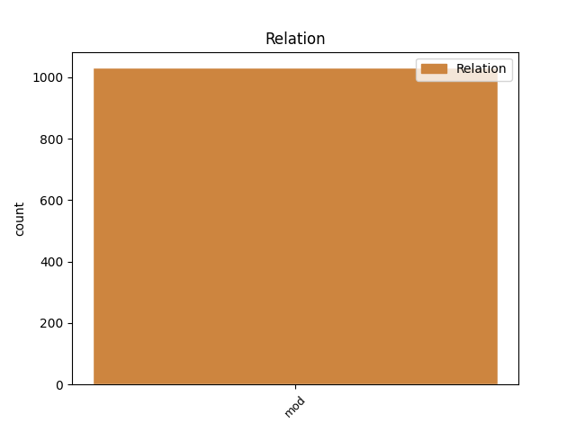
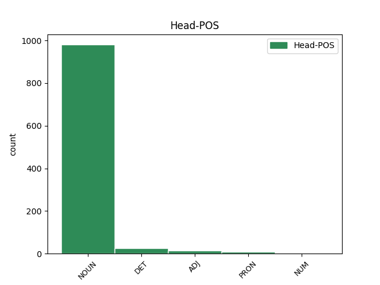
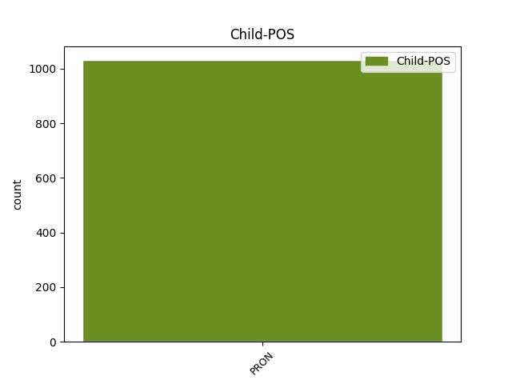

Distribution of features within this leaf



Agreement Rules sorted by frequency.
- When the dependent token is the modifer(mod) of the head token, and the head token is NOUN and the dependent token is PRON.
1 Všechny všechno PRON PLFP1---------- Case=Nom|Gender=Fem|Number=Plur|PronType=Tot 2 mod _ _
2 periody perioda NOUN NNFP1-----A---- Case=Nom|Gender=Fem|Number=Plur|Polarity=Pos 0 _ _ _
3 končí _ _ _ _ 0 _ _ _
4 nultým _ _ _ _ 0 _ _ _
5 sloupcem _ _ _ _ 0 _ _ _
6 , _ _ _ _ 0 _ _ _
7 v _ _ _ _ 0 _ _ _
8 němž _ _ _ _ 0 _ _ _
9 jsou _ _ _ _ 0 _ _ _
10 prvky _ _ _ _ 0 _ _ _
11 s _ _ _ _ 0 _ _ _
12 nulovou _ _ _ _ 0 _ _ _
13 valencí _ _ _ _ 0 _ _ _
14 , _ _ _ _ 0 _ _ _
15 které _ _ _ _ 0 _ _ _
16 netvoří _ _ _ _ 0 _ _ _
17 sloučeniny _ _ _ _ 0 _ _ _
18 . _ _ _ _ 0 _ _ _
1 To ten DET PDNS1---------- Case=Nom|Gender=Neut|Number=Sing|PronType=Dem 0 _ _ _
2 vše všechno PRON PLNS1---------1 Case=Nom|Gender=Neut|Number=Sing|PronType=Tot 1 mod _ _
3 jsou _ _ _ _ 0 _ _ _
4 cenné _ _ _ _ 0 _ _ _
5 vlastnosti _ _ _ _ 0 _ _ _
6 , _ _ _ _ 0 _ _ _
7 které _ _ _ _ 0 _ _ _
8 nám _ _ _ _ 0 _ _ _
9 pomáhají _ _ _ _ 0 _ _ _
10 po _ _ _ _ 0 _ _ _
11 celý _ _ _ _ 0 _ _ _
12 život _ _ _ _ 0 _ _ _
13 . _ _ _ _ 0 _ _ _
1 Copak copak PRON PQ--1---------- Animacy=Inan|Case=Nom|PronType=Int,Rel 4 mod _ LId=copak-1
2 já _ _ _ _ 0 _ _ _
3 byl _ _ _ _ 0 _ _ _
4 mladý mladý ADJ AAMS1----1A---- Animacy=Anim|Case=Nom|Degree=Pos|Gender=Masc|Number=Sing|Polarity=Pos 0 _ _ _
5 a _ _ _ _ 0 _ _ _
6 nějakou _ _ _ _ 0 _ _ _
7 korunu _ _ _ _ 0 _ _ _
8 jsem _ _ _ _ 0 _ _ _
9 si _ _ _ _ 0 _ _ _
10 vydělal _ _ _ _ 0 _ _ _
11 kopanou _ _ _ _ 0 _ _ _
12 , _ _ _ _ 0 _ _ _
13 ale _ _ _ _ 0 _ _ _
14 ženatí _ _ _ _ 0 _ _ _
15 kolegové _ _ _ _ 0 _ _ _
16 se _ _ _ _ 0 _ _ _
17 měli _ _ _ _ 0 _ _ _
18 tenkrát _ _ _ _ 0 _ _ _
19 co _ _ _ _ 0 _ _ _
20 ohánět _ _ _ _ 0 _ _ _
21 . _ _ _ _ 0 _ _ _
1 Co co PRON PQ--4---------- Animacy=Inan|Case=Acc|PronType=Int,Rel 0 _ _ _
2 všechno všechno PRON PLNS4---------- Case=Acc|Gender=Neut|Number=Sing|PronType=Tot 1 mod _ _
3 k _ _ _ _ 0 _ _ _
4 natírání _ _ _ _ 0 _ _ _
5 živic _ _ _ _ 0 _ _ _
6 a _ _ _ _ 0 _ _ _
7 asfaltérským _ _ _ _ 0 _ _ _
8 pracím _ _ _ _ 0 _ _ _
9 nejnutněji _ _ _ _ 0 _ _ _
10 potřebujeme _ _ _ _ 0 _ _ _
11 . _ _ _ _ 0 _ _ _
1 Maminka _ _ _ _ 0 _ _ _
2 prala _ _ _ _ 0 _ _ _
3 na _ _ _ _ 0 _ _ _
4 nás já PRON PP-P4--1------- Case=Acc|Number=Plur|Person=1|PronType=Prs 5 mod _ _
5 pět pět NUM Cn-S4---------- Case=Acc|Number=Sing|NumForm=Word|NumType=Card 0 _ _ _
6 v _ _ _ _ 0 _ _ _
7 neckách _ _ _ _ 0 _ _ _
8 na _ _ _ _ 0 _ _ _
9 valše _ _ _ _ 0 _ _ _
10 , _ _ _ _ 0 _ _ _
11 vodu _ _ _ _ 0 _ _ _
12 nosila _ _ _ _ 0 _ _ _
13 z _ _ _ _ 0 _ _ _
14 chodby _ _ _ _ 0 _ _ _
15 , _ _ _ _ 0 _ _ _
16 i _ _ _ _ 0 _ _ _
17 v _ _ _ _ 0 _ _ _
18 létě _ _ _ _ 0 _ _ _
19 musela _ _ _ _ 0 _ _ _
20 dvakrát _ _ _ _ 0 _ _ _
21 denně _ _ _ _ 0 _ _ _
22 zatápět _ _ _ _ 0 _ _ _
23 ve _ _ _ _ 0 _ _ _
24 sporáku _ _ _ _ 0 _ _ _
25 , _ _ _ _ 0 _ _ _
26 každý _ _ _ _ 0 _ _ _
27 den _ _ _ _ 0 _ _ _
28 chodila _ _ _ _ 0 _ _ _
29 na _ _ _ _ 0 _ _ _
30 posluhu _ _ _ _ 0 _ _ _
31 , _ _ _ _ 0 _ _ _
32 zatímco _ _ _ _ 0 _ _ _
33 já _ _ _ _ 0 _ _ _
34 mám _ _ _ _ 0 _ _ _
35 komfortní _ _ _ _ 0 _ _ _
36 byt _ _ _ _ 0 _ _ _
37 , _ _ _ _ 0 _ _ _
38 automatickou _ _ _ _ 0 _ _ _
39 pračku _ _ _ _ 0 _ _ _
40 , _ _ _ _ 0 _ _ _
41 etážové _ _ _ _ 0 _ _ _
42 topení _ _ _ _ 0 _ _ _
43 , _ _ _ _ 0 _ _ _
44 takže _ _ _ _ 0 _ _ _
45 domácí _ _ _ _ 0 _ _ _
46 práce _ _ _ _ 0 _ _ _
47 není _ _ _ _ 0 _ _ _
48 pro _ _ _ _ 0 _ _ _
49 mě _ _ _ _ 0 _ _ _
50 dřinou _ _ _ _ 0 _ _ _
51 . _ _ _ _ 0 _ _ _
Disagree Examples:
1 Ujednání _ _ _ _ 0 _ _ _
2 v _ _ _ _ 0 _ _ _
3 dohodě _ _ _ _ 0 _ _ _
4 o _ _ _ _ 0 _ _ _
5 provedení _ _ _ _ 0 _ _ _
6 práce _ _ _ _ 0 _ _ _
7 musí _ _ _ _ 0 _ _ _
8 být _ _ _ _ 0 _ _ _
9 tak _ _ _ _ 0 _ _ _
10 určité _ _ _ _ 0 _ _ _
11 , _ _ _ _ 0 _ _ _
12 aby _ _ _ _ 0 _ _ _
13 by _ _ _ _ 0 _ _ _
14 pracovník _ _ _ _ 0 _ _ _
15 mohl _ _ _ _ 0 _ _ _
16 na _ _ _ _ 0 _ _ _
17 jeho _ _ _ _ 0 _ _ _
18 základě _ _ _ _ 0 _ _ _
19 pracovní _ _ _ _ 0 _ _ _
20 úkol _ _ _ _ 0 _ _ _
21 , _ _ _ _ 0 _ _ _
22 k _ _ _ _ 0 _ _ _
23 jehož jenž PRON PJZS2---------- Case=Gen|Gender=Masc,Neut|Number=Sing|PrepCase=Npr|PronType=Rel 24 mod _ LGloss=(který_[ve_vedl.větě])
24 vykonání vykonání NOUN NNNS3-----A---- Case=Dat|Gender=Neut|Number=Sing|Polarity=Pos 0 _ _ _
25 se _ _ _ _ 0 _ _ _
26 zavázal _ _ _ _ 0 _ _ _
27 , _ _ _ _ 0 _ _ _
28 splnit _ _ _ _ 0 _ _ _
29 řádně _ _ _ _ 0 _ _ _
30 ve _ _ _ _ 0 _ _ _
31 stanovené _ _ _ _ 0 _ _ _
32 lhůtě _ _ _ _ 0 _ _ _
33 . _ _ _ _ 0 _ _ _
1 Jestli _ _ _ _ 0 _ _ _
2 je _ _ _ _ 0 _ _ _
3 tu _ _ _ _ 0 _ _ _
4 něčeho něco PRON PZ--2---------- Case=Gen|PronType=Ind 6 mod _ _
5 katastrofální _ _ _ _ 0 _ _ _
6 nedostatek nedostatek NOUN NNIS1-----A---- Animacy=Inan|Case=Nom|Gender=Masc|Number=Sing|Polarity=Pos 0 _ _ _
7 , _ _ _ _ 0 _ _ _
8 tak _ _ _ _ 0 _ _ _
9 jsou _ _ _ _ 0 _ _ _
10 to _ _ _ _ 0 _ _ _
11 zelenina _ _ _ _ 0 _ _ _
12 a _ _ _ _ 0 _ _ _
13 mužský _ _ _ _ 0 _ _ _
14 . _ _ _ _ 0 _ _ _
15 " _ _ _ _ 0 _ _ _
1 Čeho co PRON PQ--2---------- Animacy=Inan|Case=Gen|PronType=Int,Rel 5 mod _ LId=co-1
2 je _ _ _ _ 0 _ _ _
3 ve _ _ _ _ 0 _ _ _
4 Varnsdorfu _ _ _ _ 0 _ _ _
5 dostatek dostatek NOUN NNIS1-----A---- Animacy=Inan|Case=Nom|Gender=Masc|Number=Sing|Polarity=Pos 0 _ _ _
6 , _ _ _ _ 0 _ _ _
7 jsou _ _ _ _ 0 _ _ _
8 přesto _ _ _ _ 0 _ _ _
9 matky _ _ _ _ 0 _ _ _
10 s _ _ _ _ 0 _ _ _
11 kočárky _ _ _ _ 0 _ _ _
12 . _ _ _ _ 0 _ _ _
1 A _ _ _ _ 0 _ _ _
2 že _ _ _ _ 0 _ _ _
3 náš _ _ _ _ 0 _ _ _
4 socialismus _ _ _ _ 0 _ _ _
5 je _ _ _ _ 0 _ _ _
6 špatný _ _ _ _ 0 _ _ _
7 , _ _ _ _ 0 _ _ _
8 neodpovídá _ _ _ _ 0 _ _ _
9 zájmům zájem NOUN NNIP3-----A---- Animacy=Inan|Case=Dat|Gender=Masc|Number=Plur|Polarity=Pos 0 _ _ _
10 všech všechno PRON PLXP2---------- Case=Gen|Number=Plur|PronType=Tot 9 mod _ SpaceAfter=No
11 . _ _ _ _ 0 _ _ _
1 Úkolem úkol NOUN NNIS7-----A---- Animacy=Inan|Case=Ins|Gender=Masc|Number=Sing|Polarity=Pos 0 _ _ _
2 nás já PRON PP-P2--1------- Case=Gen|Number=Plur|Person=1|PronType=Prs 1 mod _ _
3 všech _ _ _ _ 0 _ _ _
4 tedy _ _ _ _ 0 _ _ _
5 nyní _ _ _ _ 0 _ _ _
6 bude _ _ _ _ 0 _ _ _
7 zamýšlet _ _ _ _ 0 _ _ _
8 se _ _ _ _ 0 _ _ _
9 neustále _ _ _ _ 0 _ _ _
10 nad _ _ _ _ 0 _ _ _
11 problémy _ _ _ _ 0 _ _ _
12 boje _ _ _ _ 0 _ _ _
13 o _ _ _ _ 0 _ _ _
14 skutečně _ _ _ _ 0 _ _ _
15 socialistický _ _ _ _ 0 _ _ _
16 charakter _ _ _ _ 0 _ _ _
17 člověka _ _ _ _ 0 _ _ _
18 a _ _ _ _ 0 _ _ _
19 celé _ _ _ _ 0 _ _ _
20 společnosti _ _ _ _ 0 _ _ _
21 v _ _ _ _ 0 _ _ _
22 duchu _ _ _ _ 0 _ _ _
23 jejích _ _ _ _ 0 _ _ _
24 revolučních _ _ _ _ 0 _ _ _
25 ideálů _ _ _ _ 0 _ _ _
26 . _ _ _ _ 0 _ _ _